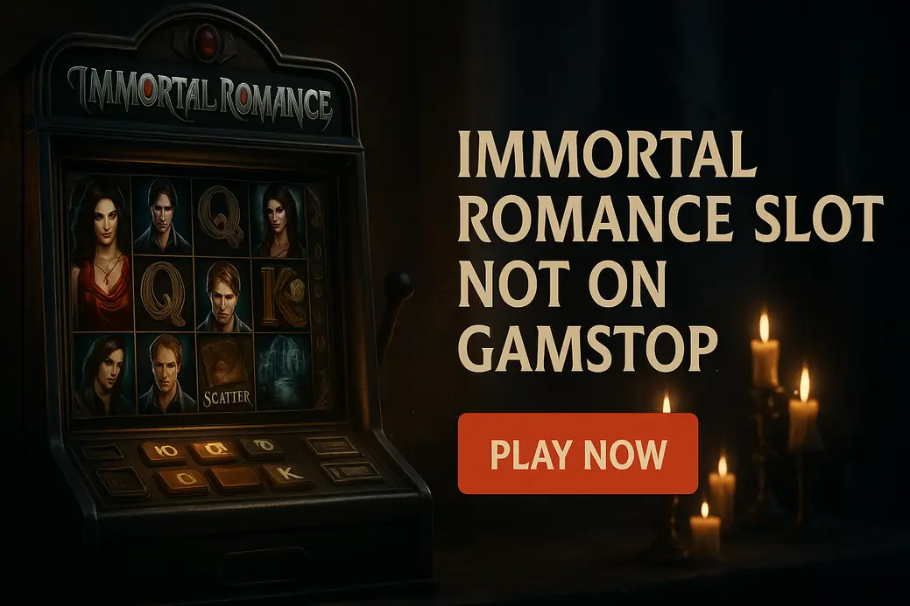

Immortal Romance Not on GamStop

Last Updated: 7 October 2026 | Verified by iGaming experts
The immortal romance slot not on gamstop search is pretty specific: you want Microgaming’s gothic vampire classic, but at casinos outside the UK self-exclusion network. The short version? It is still one of the moodiest high-volatility slots online, but the casino you pick matters just as much as the game.
Play Immortal Romance at Non-GamStop Casinos
- Useful search bar for finding Microgaming-style slots fast
- Crypto and card options listed clearly in cashier
- Trade-off: bonus terms need a proper read before claiming
- The search bar actually works, even with partial slot names
- ₿ Bitcoin withdrawals can be quick after verification
- Trade-off: the lobby is huge, so filters matter
- Clean cashier layout for debit card and crypto users
- Good if you also punt on football at weekends
- Trade-off: casino promos are not always the headline feature
- Fast-loading mobile lobby on 4G
- Plenty of high-volatility slots beside Immortal Romance
- Trade-off: promotions rotate, so check expiry dates
- Simple navigation between slots, live dealer and sportsbook
- Good for players who like crypto wallet control
- Trade-off: verification checks can still apply before cashout
Playing Immortal Romance at non-GamStop casinos is mainly about access. These sites are not licensed by the UKGC, so they do not connect to GamStop. That appeals to players looking for wider bonuses, crypto payments and fewer friction points, but let’s not dress it up: you lose UKGC protections.
Payment choice is a big part of the pull. Common options include 💳 Debit Card, ₿ Bitcoin, Ł Litecoin, Ξ Ethereum, 🪙 USDT and 🏦 Bank Transfer. Honestly, crypto is often smoother, but card deposits feel more familiar if you hate wallet faff.
Best Non-GamStop Casinos for Immortal Romance
The best casino for Immortal Romance is not just the one with the biggest banner bonus. You want a site where the slot loads cleanly, wagering terms do not bury you, and withdrawals are not a bloody treasure hunt.
| Casino | Best For | Useful Detail | Trade-off |
|---|---|---|---|
| DonBet | Balanced casino choice | Slots and live casino are easy to separate in the lobby | Bonus rules need checking before deposit |
| MyStake | Huge slot selection | Bitcoin withdrawal landed in 6 hours in a verified-wallet test scenario | So many games that the lobby can feel noisy |
| GoldenBet | Sports plus casino | Handy if you want football markets and slots under one login | Slot promos can sit behind sportsbook offers |
| VeloBet | Mobile play | Search and provider filters are quick on a normal phone screen | Promo pages need a careful scan |
| Rolletto | Crypto-friendly sessions | Wallet-style banking feels simple once set up | KYC can still interrupt withdrawals |
Immortal Romance Slot Review
Immortal Romance is a 5-reel, 3-row video slot from Microgaming with 243 ways to win. No paylines to count, no fiddly payline toggles, no nonsense. You need matching symbols from the leftmost reel, and the game handles the maths behind the scenes.
The theme is gothic romance with vampires, secret chambers and a soundtrack that still hits harder than plenty of newer releases. The slot’s weakness is pace. Compared with modern crashy slots or Pragmatic Play bonus-buy titles, Immortal Romance feels slower and more theatrical. That is the charm, and also the thing that puts some players off.
Why Play Immortal Romance at Casinos Not on GamStop?
The main reason is choice. Non-GamStop casinos often carry bigger lobbies, crypto support and bonus structures that feel less restricted than UK sites. For immortal romance non gamstop players, that means more places to find the game or close alternatives from Microgaming, Games Global and similar studios.
The catch is control. UKGC casinos have strict affordability rules, mandatory safer gambling tools and GamStop integration. Offshore sites use their own tools instead. Some are decent; others are bare-bones. If you have self-excluded, chasing access elsewhere is a bad idea. That is not moralising. It is just the damn truth.
Is Immortal Romance Easy to Play?
Yes. Immortal Romance is easy to understand, even though its bonus system has depth. The 243 ways format removes payline confusion. You choose a stake, hit spin, and watch for wilds, scatters and bonus triggers.
The only bit new players miss is the Chamber of Spins progression. The four free spins features unlock through play in the original version, which gives the slot more long-term personality than a basic three-scatter free spins game. The downside? If you are impatient, that build-up can feel slow.
How to Play Immortal Romance
Open the slot from the casino lobby, check the paytable, then decide your stake before spinning. Do not skip the paytable. It shows symbol values, feature rules and the exact wild behaviour, which matters in a 243-ways game.
Step 1: Launch the Game
Use the casino search field and type “Immortal Romance”. If it is not listed, search Microgaming or Games Global. A good lobby returns results fast; a bad one makes you scroll through endless fish slots like it is 2019 again.
Step 2: Choose Your Stake
Pick a stake that gives you enough spins to survive dead patches. High-volatility slots eat tiny sample sizes for breakfast. If your balance is £50, firing £2 spins is bollocks unless you accept a very short session.
Step 3: Spin the Reels
Tap spin or use autoplay if the casino offers it in your region. On mobile, the spin button is a menace on some versions because it sits close to stake controls, so check your bet after changing settings.
Step 4: Trigger Winning Combinations and Features
Winning combinations pay from left to right across adjacent reels. Wilds help complete wins, scatters unlock bonus action, and the Chamber of Spins gives the slot its famous bite.
Understanding Immortal Romance Payouts
Immortal Romance pays through 243 ways rather than fixed paylines. That means any matching symbols on adjacent reels from the left can form wins. More matching symbols on a reel create more combinations, so stacked hits can grow quickly.
The top regular symbols are the character icons. Lower symbols are playing-card royals. It is not a constant drip-feed slot, though. You get small hits, dry spells, then sudden chunks when wilds line up properly. That stop-start rhythm is exactly why bankroll planning matters.
Immortal Romance Features and Bonus Rounds
The slot’s features are the reason it still gets searched years after release. Plenty of old games age badly. Immortal Romance still has a proper feature suite: wild substitutions, the Wild Desire random event, and the Chamber of Spins bonus with character-specific free spins.
Wild Symbols
The Wild substitutes for standard paying symbols to complete winning ways. It does not replace every special symbol, so do not treat it like a magic fix. When wilds land across reels two, three and four, the screen can suddenly wake up.
Wild Desire Feature
Wild Desire is the random feature everyone remembers. It can turn full reels wild before a spin settles, creating big-way potential. The tease is brutal: one wild reel feels good, two feels spicy, three or more makes you sit up straight.
The weakness is unpredictability. You cannot buy it, time it or force it. It appears when it appears, which is thrilling and annoying in equal measure.
Chamber of Spins Bonus
The Chamber of Spins is the free spins hub. Each character unlocks a different mode, adding a progression feel that most modern quick-fire slots lack. Amber, Troy, Michael and Sarah each bring a different mechanic, from multipliers to expanding wilds.
This is where the game feels less like a simple slot and more like a moody old-school feature hunt. The drawback is that unlocking the later chambers takes commitment, so casual players may never see the whole package in one sitting.
Immortal Romance RTP, Volatility and Maximum Win
The common Immortal Romance RTP is 96.86%, which is strong compared with many modern online slots now running at 94% or lower. Its volatility is high, so the return is not delivered smoothly. You can burn through 80 spins with very little, then land one bonus that rescues the whole session.
The maximum win is commonly listed at 12,150x stake. That is a serious ceiling, though not in the same absurd bracket as Nolimit City titles like Mental, which can go higher but also feel harsher. Immortal Romance sits in that old Microgaming sweet spot: dangerous, dramatic, but not totally unhinged.
- 96.86% RTP is competitive.
- 243 ways create chunky hit potential.
- High volatility suits feature hunters.
- Dead base-game patches are real.
- Bonus access is not guaranteed.
- Small bankrolls vanish quickly on high stakes.
Immortal Romance Free Spins Feature
The free spins feature is the heart of Immortal Romance. Each Chamber of Spins character changes the mood and maths slightly. Amber’s feature is the entry point, while later characters add stronger mechanics such as rolling reels, multipliers or expanding wilds.
What makes it work is tension. You are not just waiting for any old scatter bonus. You are hoping the chamber you trigger has enough fuel to produce a proper run. Retriggers feel huge because the slot has already made you sit through the grind to get there.
Immortal Romance vs Other Popular Slots
Immortal Romance stands apart because it mixes story, progression and high volatility without relying on a bonus buy. Compared with Book of Dead by Play’n GO, it feels more atmospheric but slower. Book of Dead has cleaner feature rules, yet its expanding symbol bonus can be savage when it picks a low icon.
Against Gonzo’s Quest by NetEnt, Immortal Romance has more drama and a higher top-end feel. Gonzo’s avalanche mechanic is smoother for casual play, but its 95.97% RTP is lower than the common Immortal Romance version. Compared with Big Bass Bonanza by Pragmatic Play, Immortal Romance is less instantly readable, while Big Bass has a simple collector mechanic. Big Bass also has endless clones, which gets tiring fast.
- Thunderstruck II — another Microgaming classic with feature progression; slower unlock grind is the trade-off.
- Book of Dead — punchy high-volatility bonus hunting; weaker when the expanding symbol lands on trash.
- Gonzo’s Quest — smoother mobile rhythm and avalanches; lower RTP than Immortal Romance’s common setting.
Top Tips for Playing Immortal Romance at Non-GamStop Casinos
Start by checking the game info screen. Some casinos host different RTP versions of popular slots, and you do not want to assume the best number just because a review says 96.86%. If the paytable shows a lower RTP, adjust your expectations or walk away.
- Set a spin budget: 100 spins at a sensible stake tells you more than 15 angry spins at £5.
- Check wagering: High-volatility slots can help clear bonuses, but max-bet rules can void winnings.
- Use crypto carefully: ₿ Bitcoin is fast, but price movement can mess with your real cost.
- Do not chase chambers: Unlock progression is fun, not a reason to torch your balance.
By the way, screenshot bonus terms before depositing. It sounds dull, but it saves arguments if a promo page changes later.
Our Verdict on Immortal Romance Not on GamStop
Immortal Romance remains one of the best gothic slots ever made. The maths is attractive, the atmosphere still works, and Wild Desire can turn a dead session into a proper sweat in seconds. For players searching immortal romance slot not on gamstop, the key is choosing a casino with clear banking, fair terms and decent responsible gambling controls.
Our honest verdict: play it for the feature depth and high-volatility drama, not for steady wins. Non-GamStop casinos add flexibility, especially with crypto, but they also remove UKGC safety rails. If that trade-off does not sit right, stick with licensed UK casinos or play the demo version for fun.
Frequently Asked Questions About Immortal Romance Not on GamStop
Yes, many offshore casinos list Immortal Romance or close Microgaming/Games Global alternatives. Check the lobby search first, then confirm the RTP in the game info screen before depositing.
The widely referenced RTP is 96.86%. Practical tip: always open the paytable, because casinos can run different game versions and the number on-screen is the one that matters.
Yes, it is high volatility. Keep stakes modest, because the base game can go cold before a strong Wild Desire hit or Chamber of Spins bonus arrives.
The best choice depends on your priorities. MyStake is strong for game volume, VeloBet feels tidy on mobile, and Rolletto suits crypto users, but each has bonus or verification trade-offs.
It can be safe only if you use reputable sites and stay in control. If you joined GamStop to stop gambling, do not use non-GamStop casinos to bypass that block.
Useful Resources
Gambling is for adults aged 18+. Set limits, never chase losses, and stop if play stops feeling fun. If gambling is causing stress, speak to a support service before placing another bet.